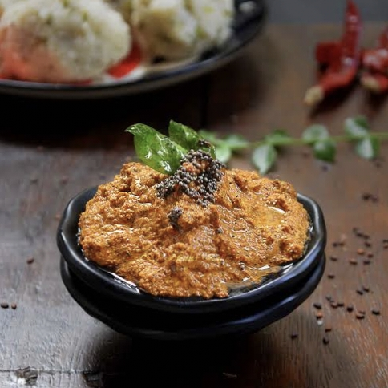

Ingredients:
- ¼ cup sesame seeds (white or black)
- 2 tbsp grated coconut (optional, for richness)
- 2 dried red chilies (adjust to taste)
- 1 small garlic clove
- ½ tsp cumin seeds
- ½ tsp salt (or as needed)
- 1 tsp tamarind pulp (or lemon juice for tanginess)
- Water as neede

Instructions:
- Dry roast sesame seeds on low heat until they turn golden and start popping, then let them cool.
- Blend roasted sesame seeds with coconut, red chilies, garlic, cumin, salt, and tamarind, adding little water.
- Grind to a smooth or coarse paste as per your preference, adding more water if needed.
- Taste and adjust seasoning, adding more tamarind or salt if needed
- Serve with idli, dosa, or rice. It can be stored in the fridge for 2-3 days.
కావలసినవిః
- ¼ కప్పు నువ్వులు (తెలుపు లేదా నలుపు)
- 2 టేబుల్ స్పూన్లు తురిమిన కొబ్బరి (ఐచ్ఛికం, గొప్పదనం కోసం)
- 2 ఎండిన ఎర్ర మిరపకాయలు (రుచికి సర్దుబాటు చేయండి)
- 1 చిన్న వెల్లుల్లి,లవంగం
- ½ స్పూన్ జీలకర్ర గింజలు
- ½ టీస్పూన్ ఉప్పు (లేదా అవసరమైన విధంగా)
- 1 టీస్పూన్ చింతపండు గుజ్జు (లేదా సున్నితత్వం కోసం నిమ్మరసం)
- అవసరమైనంత నీరు
- నువ్వులు బంగారు రంగులోకి మారే వరకు తక్కువ వేడి మీద వేయించి, ఆపై వాటిని చల్లబరచండి
- .కొబ్బరి, ఎర్ర మిరపకాయలు, వెల్లుల్లి, జీలకర్ర, ఉప్పు మరియు చింతపండుతో కాల్చిన నువ్వులు, కొద్దిగా నీరు జోడించడం
- .మీ అభీష్టానుసారం మెత్తగా లేదా ముతక పేస్ట్గా గ్రైండ్ చేయండి, అవసరమైతే మరింత నీరు జోడించండి.
- మసాలాను రుచి మరియు సర్దుబాటు చేయండి, అవసరమైతే మరింత చింతపండు లేదా ఉప్పు జోడించండి
- ఇడ్లీ, దోస లేదా అన్నంతో సర్వ్ చేయండి. ఇది 2-3 రోజులు ఫ్రిజ్లో నిల్వ చేయబడుతుంది.